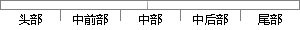

每个任务都由任务控制块链表中的任务块进行管理，当系统运行后，会把每个空的任务控制块连接成一个链表，称为空任务块控制链表，当需要创建任务时，便可从这个链表中拿出一个空的任务控制块，来设置任务的相关信息。
片段位置图

相似结果
1
原句片段： 每个任务都由任务控制块链表中的任务块进行管理，当系统运行后，会把每个空的任务控
相似片段：每个任务都有一个任务控制块TCB(TaskControlBlock),...·具有单独的任务堆栈并对其进行管理。 8 第二章...块链表的末端,并运行就绪任务控制块链表中的下一个...
| 标题 | 《基于ARM和μC/OS-Ⅱ的嵌入式系统的研究与开发》 |
| 对比库 | 中国学位论文全文数据库 |
| 作者 | 周洁 |
| 机构 | 华东交通大学 |
| 分类 | 计算机应用技术 |
| 年份 | 2006 |
| 相似率 | 78.57% （轻度抄袭） |
2
原句片段：制块连接成一个链表，称为空任务块控制链表，当需要创建任务时，便可从这个链表中拿出一个空的任务控制块，来设置任务的相关信息。
相似片段：每当创建一个新任务时,就从这个链表取一个空任务... 系统就会将该事件的控制块归还给空 事件控制链表。...标志组连接成一个单向链表,这就是 空标志组链表。...
| 标题 | 《uc-os内核数据结构_百度文库》 |
| 对比库 | PaperRater云论文库 |
| 网址 | http://wenku.baidu.com/link?url=qGbvfW9G38GNiBzzOkl18_VM0t9znQDAllQclEB03XUOVcv_4_CSqHsrdHz2GjIpA7z4-l0n5N0R4ldC5TAH6ZU8lLjvTED2NX0JjnYlxGW |
| 相似率 | 67.44% （轻度抄袭） |
※ 片段修改建议 ※
近似词参考：- 任务：使命 义务
- 进行：举行
- 系统：体系
- 管理：办理 经管 治理
- 需要：必要
- 创建：建立 创立
- 控制：节制
- 每个：每一个
- 相关：相干
- 便可：甚至 即可 以致 就可
系统自动生成语句： 每一个使命都由使命节制块链表中的使命块举行办理，当体系运行后，会把每一个空的使命节制块连接成一个链表，称为空使命块节制链表，当必要建立使命时，甚至从这个链表中拿出一个空的使命节制块，来设置使命的相干信息。
注：本片段修改建议为系统自动生成，仅供参考。